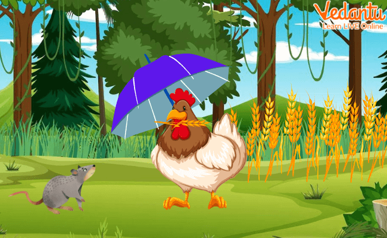
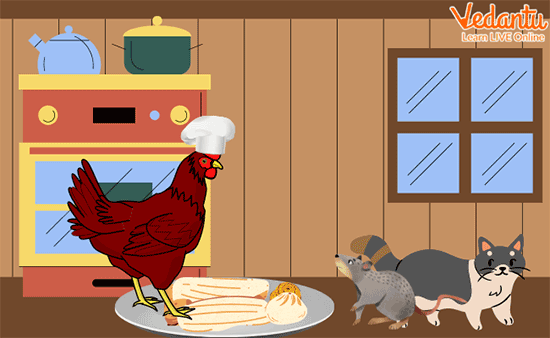

If you love stories about animals, then you've come to the right place! We have an interesting story of a hardworking little red hen and three other animals - a rat, a cat, and a goose. In this hen story, when the hen asks for help planting some wheat, or for threshing, milling, or baking bread, she is shocked by everyone’s responses. So guess who eats the hard-earned bread by herself in the end?
This hen story is a fun read for kids with pictures, which also teaches them many valuable lessons. So, read this short classic bedtime folktale written by Bullock (1929–1999) to teach children about how we reap what we sow, and also about good habits.
Once upon a time, there lived a little red hen on a farm. She had three neighbours who were also her friends - the lazy rat, a sleepy cat, and a noisy goose. One day, the little red hen found some wheat seeds on the ground and decided to plant them. So, she asked her friends, “Who will help me plant the seeds?” “Not I!” said the cat, rat and goose simultaneously. “Well, then I will!” said the little red hen and planted the seeds all by herself
The wheat grew in a few months. So, the little red hen again asked her friends, “Who will help me cut the wheat?” “Not I!” said the lazy rat. “Not I!” said the sleepy cat. “Not I!” said the noisy goose. “Then I will!” said the little red hen, and again cut the grown crop and threshed it all by herself using her wings.
Now, it was time to ground the harvested wheat to make flour. So, the little red hen asked all her friends, “Who will help me take the wheat to the mill?” Her lazy friends again replied the same, “Not I!” The little red hen again complied and took the wheat to the mill all by herself. She got it grounded into flour and carried the heavy sack all the way back.

The exhausted hard-working hen then asked her friends to help her bake the bread. But as expected, all of them replied, “Not I!” So, she baked the bread all by herself.
When she had finally baked the deliciously smelling bread, the little red hen asked her friends for the last time, “Who will help me eat the bread?” This time the cat, rat and goose all replied, “I will!” This surprised the little red hen, and she said, “You refused to help me with any of the work before. You are all lazy, so now none of you will get the bread!”
So, the little red hen, along with her chicks, ate the tasty bread all by herself.
The little red hen taught her friends a nice lesson in the end, right? See, this is what happens when you are too lazy to do any work. You don’t get the results. But this was an interesting hen story to teach valuable morals as given below.
Also, if you want to read more such bedtime stories, head to our website and explore through a huge collection of stories and poems for you little ones!